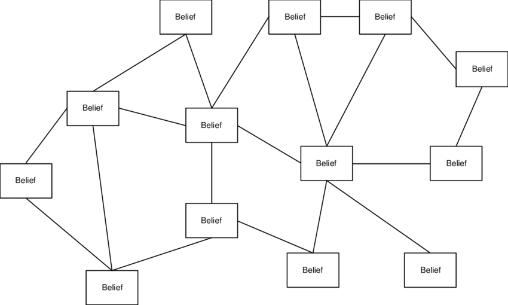

Why It’s So Difficult To Change People’s Minds
Table of Contents
- 1. Introduction
- 2. How Coherentism, Belief Systems, and Echo Chambers Work
- 3. The Current Culture And The Need For Social Confirmation
- 4. Modeling Belief Networks As Hub-And-Spoke Diagrams
- 5. Selective Attention, Selective Ignorance, And Recognizing Contradictions
- 6. How Heuristics Affect Different People’s Ideologies
- 7. Rational Ignorance And Appeals To Authority
- 8. Censorship, Strawmen, And The Ideological Turing Test
- 9. The Sapir-Whorf Effect Affects People’s Subconscious Thoughts
- 10. Most People Never Bother To Think About Epistemology
- 11. Most People’s Identities Are Strongly Connected To Their Ideologies
- 12. Genetic and Hormonal Differences Affect People’s Beliefs
- 13. What It Takes To Change People’s Minds
- 14. What is the Best Belief System?
Note: I haven’t finished writing this file yet. It takes time to write stuff, and a lot of what is displayed here may not flow very well from paragraph to paragraph.
1. Introduction
I am definitely not the first person to recognize how futile it usually is to argue with someone else who believes in a different ideology.
The Story of Us blog series by WaitButWhy gives a lot of appealing visuals, text and metaphors for describing the current state of political discussion in the modern world, but it fails to dig deep into the epistemological reasons why people are so strongly inclined to not change their minds when they disagree with others. This essay is an attempt to describe what that series and most other works have failed to recognize.
“Anyone can prattle nonsense, and they’ll always be able to find people to believe it, especially if they can dress it up in superstitious flummery. Careful reasoning and experience of the world are needed.” --Wang Chong
i
2. How Coherentism, Belief Systems, and Echo Chambers Work
Every person has their own coherentist network of facts within their minds, which was formed from their social networks: online websites like Youtube, Twitter, Reddit, Facebook, the Internet in general, whatever influential books they’ve read, their friends, their own personal experiences, and whatever conclusions they make up on their own from all of that and their life experiences. Each person’s social network is usually an echo chamber or bubble, since most people prefer information that conforms with their own narratives, instead of what is true of reality.
The dominant, collective moral narrative of each online network selects for whatever information conforms best with the moral narrative of the users using the network. i
So everybody and every ideology has a different network of facts stored in their minds that they consider to be true. Nearly all these stored mental facts were cherry-picked to a great degree to fit their existing belief systems, rather than to challenge them.
Within these online networks, people usually promote articles with misleading headlines, as long as the headlines fit their narrative, even if they haven’t actually read the article and if reading the article wouldn’t actually support (and might even contradict) their narrative.
Wikipedia: The Texas Sharpshooter Fallacy
[Defining belief systems]
We have many other beliefs that we believe in that are all connected in similar networks, besides just ideological ones. The beliefs within the ideological belief system are a subset of one’s entire belief system, that is their entire mental model of reality from the perspective of them as a subject.
https://davidwees.com/content/what-is-conceptual-understanding/
[market segmentation and belief networks]
Aside from the fact that most people never seriously think about epistemology to any great extent, another reason why most people are so unaware of how all belief systems have coherentist structures is that most people don’t usually make many significant changes to their ideologies or belief systems within their lifetimes. People who have uprooted their entire ideological belief systems once or twice in their lives are somewhat common, but people who have done it even more than that are even rarer, and of those people, very few of them analyze the structures of their belief systems from an epistemic point of view. I, however, have changed my belief system many times as a young adult, as I have detailed in my political/philosophical misc. I went through many ideologies as I chased after understanding, and each time, I felt even more confident in my beliefs. i
Wikipedia: Coherence (Linguistics)
In normies circles, people often parrot sentences and sound bites that supposedly highlight/expose contradictions in their opponents’ beliefs, whether they actually do that or not.
This is a type of low-level thinking.
Since everybody has a different coherentist belief network for everything that they believe in, debating is mostly pointless, because everybody thinks that they’re right since every person has strong coherence within their belief networks. People can occasionally persuade people with different beliefs in the belief networks of their interlocutors, but this has a very low probability of succeeding since the coherentism within every person’s belief network gives everybody a strong sense that they are right and everybody else is wrong.
Relevant Article: WaitButWhy: Idea Labs And Echo Chambers
2.1. Every Ideology Has Their Own Explanation Why They’re Not More Popular
Every ideology has their own narrative for why their beliefs are not more popular, whether it’s true or not. If they didn’t, this would be a major source of incoherence that would break many of the connections inside the ideology’s belief network, and that incoherence would pose a threat to the ideology’s propagation and continued existence.
- If you ask Communists, they will say that the Capitalist system and Pro-Western propaganda have brainwashed everybody into supporting Capitalism and wage slavery, and the CIA is responsible for overthrowing foreign attempts to establish Communism in other countries during the Cold War, supposedly because it is in the interest of the Capitalist system, and not for geopolitical interests.
- If you ask Ancaps, they will say that it is because the government brainwashed everybody into believing in state of them with the help of the public education system.
- If you ask Efilists, they will say that it is because everybody’s DNA or biological code programmed everybody to ignore all the suffering in life, embrace Natalism, and ignore Antinatalist, Pro-Mortalist, and Efilist thinking. And they are actually right that life is wired to some extent to be Natalist, but they are wrong that DNA is the puppeteer, and the organism is the puppet. Once again, this is the rhetoric of exploitation, it’s not even true that DNA contains all the biological programming for organisms since the cell is the correct medium of inheritance.
- If you ask Feminists, they will say that the Patriarchy is so well entrenched into the mainstream culture that it causes everybody to reject Feminism and the so-called equality of the sexes.
- If you ask Objectivists, they will say that it is because the majority of the world is religious, and so the atheist beliefs of Objectivism are unappealing to them. They will also say that the explicitly pro-selfishness preaching of Objectivism is unattractive to the modern, altruistic and irrational culture.
The exception to this rule is when someone strongly believes in a very mainstream ideology. In which case, they would have a node in their belief network that their belief network is the most popular or one of the most popular ideologies because it’s the most correct. While this is basically an Appeal to the People Fallacy, most people find it reassuring when other people (especially a majority) agree with their beliefs.
4. Modeling Belief Networks As Hub-And-Spoke Diagrams
(These are not to be confused with Bayesian Networks, which are also often called belief networks.)
Thus, when people criticize opposing ideologies, what will often happen is that they have one argument that they think is a silver bullet that they can utter that will automatically win the debate in their favor. Sometimes this actually does happen, and it’s easier to happen the more ridiculous the opposing person’s claim is. When the supposed silver bullet doesn’t convince the other person that they’re wrong (and there is no censorship to shut the debate down), what usually ensues is a lengthy debate where the opposing ideologist recites other beliefs connected to the belief node that is under attack. This makes it very challenging to refute even a single belief, because the debaters aren’t just attacking a single belief, they’re also attacking the entire network of beliefs that all back up and support that one belief node.

This is why when people convert to new ideologies, it can be gradual process when they’re slowly discarding beliefs from their former worldview (they’re removing the spokes within their belief network), or a really rapid process where a multitude beliefs are discarded all at once when a particular belief gets disproven (one of the central hubs of the belief network). Perhaps even a new ideology is introduced, although this part will probably be a more lengthy process since it usually takes time to adapt and get used to a new ideology.
One of the reasons why I like to write FAQs pages for addressing people’s questions is that I believe from my own personal experiences that they are a really effective way to address multiple spoke beliefs of an individual’s belief system at once.
For faster results it is probably more efficient to attack the hubs of an ideological belief system rather than the spokes, when it’s possible. But unfortunately, that is usually harder to do because the hubs that have the mass connection. We can think of the relative worth of dismantling other people’s beliefs in terms of a cost benefit analysis. If you manage to dismantle one of the beliefs that are relatively more well-connected than other ideas, then there is a greater reward for doing so, but the same time it can also be more difficult, because the greater number of connections to that central belief can also make it very difficult to let go of. Conversely, attacking beliefs, or the more minor ones could be easier since they have your connections to the other beliefs, but there is also a small payoff for disproving them due to their fewer connections.
So generally speaking, there is never a right way to dismantle someone else’s belief system. One can start the spoke beliefs, or one can start the hub beliefs. They both have payoffs that tend to correlate proportionally to the number of collections that they have, so the best beliefs to refute are the ones that you think you will have the best shot at.
When people ask questions about things that they are unsure of relating to their ideologies to other believers of the ideology, it is typically because they are seeking coherence for the ideology regarding one of the weaker nodes of their belief network. these moments are often great times to strike at the ideology and expose contradictions within the belief system, if there are any. The rejection or further propagation of the ideology depends on its ability to generate coherent, sounding explanations for times like these where coherent is lacking.
The strive and curiosity for knowledge is largely driven by the strive for or seeking coherence, which is to strive to have a representative model of reality that is as accurate as can be.
We have already established that in order to validly believe anything there needs to be at least some evidence, but regarding the need for coherence which causes ideologues to often come up with crazy ideas in order to increase the coherence of their ideological belief systems, a lot of ideologues for site, their belief systems, and what they have observed as the evidence in favor of those crazy ideas.
This reveals that whatever a believer considered “evidence” is any fragment beliefs of their beliefs systems what should happen forms, according to their life experiences as a subject and process. Evidence seems to be nearly synonymous with beliefs.
It can be very difficult and time consuming to draw complete belief, not work, maps, showing all of a person’s ideological beliefs, especially if they have dozens or even hundreds of beliefs with hundreds of connections between them.
Often times, when people construct their own Internet Wikis (e.g. Wikipedia, Conservapedia, “Rational” Wiki, Metapedia, etc), the Wiki writers are just constructing articles that show the maps and details linking all of their beliefs together. Another example would be how this website and all its links illustrate what Zero Contradictions’ belief network looks like, except for the remaining out-of-date content.
The goal of debating is to attack each and all of the nodes in the opponent’s belief network, but more so to change the belief networks of the audience members.
4.1. Belief Maps And Propositional Logic
When drawing the directed edges between all the different nodes in someone’s belief network, we can label each some these edges with boolean operations, because the combination of these beliefs and the format of these boolean operations is equivalent to the formal arguments for people, explicitly list out the propositions that they used to reach their conclusions. If the directed edges to not have any boolean operations on them then that only indicates that one believe implies the belief where the arrow is pointing.
If there is a directed edge from belief 1 to belief 2 and a directed edge from belief 2 to belief 1, then that probably indicates that the relationship between those two beliefs (or two propositions, if we think of them as propositions instead) is a biconditional.
For example, if (A ^ B ^ C) -> D, then (~A v ~B v ~C) could make D undecided, but we would need software that can convey a 3-to-1 edge connection from A, B, and C to D.
4.2. Selective Attention: What Belief Maps Don’t Show
Another thing to keep in mind is that selective attention (or perhaps selective ignorance) of contradictions is as important to belief networks as the belief nodes themselves.
If the selective ignorance of some contradictions was never realized in the first place, then many of the core belief network hubs and nodes never would’ve appeared in the first place. And this is especially important to note because although we can map belief network nodes as a graph, we would often have no idea how these beliefs network nodes were formed in the first place, if we are not aware of the selective attention and selective ignorance of some important concepts in the first place.
That being said, when belief maps are created, it is important to keep separate notes, or a separate diagram, explicitly detailing how the believers’ stream of sensory input, selective attention, and thought process played out.
For example, many Anarcho-Communists would have a node in their belief network that if people don’t work under Capitalism, then they will die, but if they were to draw belief maps representing their own beliefs, they wouldn’t think to add a node or note to the diagram that they’re ignoring that literally every economic ideology requires people to work, lest they die. Like how people are guaranteed to die on a deserted island if they didn’t work to find food, water, and shelter at all.
The main reason why exposure to other people with different ideologies/beliefs is important is mainly because it enables us to focus our attention on beliefs that may have been ignored by our selective ignorance / attention. To a somewhat lesser extent, it can also expose us to different logic/reasoning that can improve the correspondence of our belief networks with reality.
When people outline their arguments and premises, propositions, and conclusion format, what they are doing is that they are taking different notes from their belief that work, and saying them in an explicit format instead of an implicit one. However, one limitation is that they do not list all of the assumed implicit premises and selective attention. Biases that were used to help them reach the conclusion that they are stating.
4.3. Software For Mapping Belief Networks
4.4. Examples of Opposing Ideologies For Demonstrating How Belief Networks Work
i
4.4.1. Religious Versus Atheist Beliefs
i
Pro-life people frequently repeat that there are many contraceptives available, so there should be no excuse if a woman got pregnant from consensual sex. They repeat this frequently, because this justification is a major node within their belief network for opposing the legality of abortions.
4.4.2. Conservative Versus Modern Liberal Beliefs
i
4.4.3. Georgist Versus Ancap Beliefs
This image shows the following belief map for why Georgists believe that Land Value Tax would strongly benefit the economy:

Georgists also have a second belief map of beliefs and arguments for why they believe Land Value Tax is justified, which has many connected nodes to the belief map show above.
4.4.4. Objectivism Belief Network Map
This image shows the following belief map for Objectivists: Objectivism Belief Network Map
4.4.5. Pragmatopian Versus Efilist Beliefs
i
5. Selective Attention, Selective Ignorance, And Recognizing Contradictions
The cognitive phenomenon of Selective Attention prevents people from recognizing contradictions and implicit assumptions within their own belief networks.
Something that might be a contradiction in one belief network may not be a contradiction in another belief network and vice versa.
Belief networks can make things that are contradictions in reality seem like they are not contradictions within the believer’s worldview.
Belief networks can also make things that aren’t contradictions in reality seem like they are contradictions.
It can be particularly difficult to catch circular reasoning fallacies since all the statements in the fallacy give coherence to each other, albeit in an illegitimate way.
Note that although “selective ignorance” is patterned after “selective attention”, it often technically isn’t “selective” because ignorance is often unintentional.
For that matter, “selective attention” often isn’t intentionally selective / non-selective of certain things, but eeeeeeeeeeee
6. How Heuristics Affect Different People’s Ideologies
6.1. Apophrenia and Confirmation Bias: When People Selectively Perceive Patterns That Cohere With Their Beliefs, Rather Than Contradicting Them
It seems that a lot of people are aware of what confirmation bias is, but almost no one understands why it occurs, (since most people are ignorant of epistemology). Since coherence is necessary in order to form strong belief systems, this causes ideologues to make up bad ideas that aren’t grounded in reality in order to increase the coherence of what they believe and prevent them from recognizing how their ideologies contradict reality.
Since most people are unaware that belief systems are structured to coherentism, every time they see or hear something that they perceive to reaffirm their belief system, they only interpret what they have seen as more evidence for believing that they are right. They aren’t aware that Ideologies cause people to look for patterns that conform with their beliefs, instead of patterns that contradict their beliefs. Every person has an ideological filter that causes them to interpret events according to their ideology, instead of what the events are actual signs of.
Example: The 2022 Buffalo Shooting
- Conservatives pointed out how: 1. the shooter’s manifesto stated that he was always authoritarian left-leaning, 2. that he did the attack to provoke lawmakers to past more gun control laws that would supposedly encourage white people to fight for their rights, 3. they interpreted his race realism facts and study citations as racist garbage (mainly because most people never got to see the manifesto since it was censored), etc.
- Leftists used the manifesto as evidence that white supremacy is a serious issue, despite how remarkably rare incidents like these are, many leftists lied by saying that the shooter was a conservative (even though the manifesto says that he was left-leaning), etc.
i
Ideologies cause people to look for patterns that conform with their beliefs, instead of patterns that contradict their beliefs. Every person has an ideological filter that causes them to interpret events according to their ideology, instead of what the events are actual signs of.
i
Ignorance and hubris are things that plague all humankind. Please don’t be so uncouth as to imply you are the clean one and others are muddied up. It makes you sound ignorant and hubristic. Alternative hypothesis: A person likes some ideas better than others, they use them to explain the world in terms they are familiar with. They dislike ideas that uproot these ideas. And thus they find whoever says these other ideas distasteful. This process is called cognitive dissonance.
6.2. Why Ideologues Come Up With Ridiculous Ideas
It seems that a lot of people are aware of what confirmation bias is, but almost no one understands why it occurs, (since most people are ignorant of epistemology). Since coherence is necessary in order to form strong belief systems, this causes ideologues to make up bad ideas that aren’t grounded in reality in order to increase the coherence of what they believe and prevent them from recognizing how their ideologies contradict reality. In order for memes and ideologies to reproduce themselves, they need to have strong links that reinforce the other ideas inside the believers’ belief systems, and crazy, ridiculous ideas can do just that. Some examples:
- Thomas Aquinas came up with his Five Arguments in Favor of God because it was a way to increase the coherence of the Christian belief system, which is why the arguments gained a lot of popularity. In my opinion, the only argument that made any sense was the Cosmological Argument, which I explain here.
- How many Democrats believe that Republicans want Voter ID laws because they want to prevent minorities from voting, even though the real reason is that Republicans are concerned with voter fraud.
- How leftists will insist that conservatives are anti-immigration only because they are racist, when they’re actually concerned with crimes committed by illegal immigrants, and they believe that the country’s resources and welfare should be preserved only for the country’s citizens.
- How many far-leftists believe that right-wingers want people to have more children only to “create more wage slaves and feed Capitalism’s need for endless growth”.
- Many hard-core Communists claim that all the information about North Korea being a dictatorship instead of a democracy was fabricated by western and mainstream media outlets. Example. This belief is effective for reinforcing the belief in Communism because it gives the believers a reason to easily discredit the vast majority of information out there.
- How Libertarians came up with Cornucopianism to compensate with their belief that population control and other governmental measures are not necessary to regulate the population, even though it makes no historical or biology sense and greatly overestimates the potential of technology.
- How this Ancap came up with the conspiracy theory that the world’s governments want to depopulate the Earth as an explanation for why bad events are happening (from his POV).
- How people instinctively reject race realism because they don’t know any better and due to how memetics tends to work.
- Being taught all sorts of great things about individualism and independence is a factor that leads people (particularly Libertarians) to naïvely reject race realism because in theory everybody should be equal in an ideal individualist world.
- How leftists think that that conservatives want to ban abortion because they “want to control women’s bodies”, even though the real reason is that conservatives believe that unborn infants as having a right to life.
- Creationists who insist that dinosaur bones were constructed and planted in the ground to provide evidence for evolution.
- These Efilists who assume that Blithering Genius was a religious person and “pretends everyone else doesn’t have feelings” since it’s easier for them to believe that, since actually confronting his arguments against Efilism would weaken the coherence of their belief systems.
- i
- i
Interestingly, many of the craziest, most delusional lies tend to be brainstormed when political ideologues and utopian ideologists are trying to brainstorm propositions that they believe to be true (even if there’s little to no evidence regarding the actual truth) in order to maintain the coherency of whatever crazy, ridiculous nonsense that they believe.
8. Censorship, Strawmen, And The Ideological Turing Test
The censorship of ideas is another important factor at play for making it more difficult to change people’s minds. As long as alternative beliefs are never mentioned and those things are kept out of consciousness, people are never going to even think about heretic ideas. Inside many of these networks, they will hear the worst strawmen constructions of the other side, so they will typically respond with fallacious rebuttals to heretic ideas if they do hear them.
There are many people who wouldn’t know how to refute arguments against their belief system if they stepped outside of their ideological bubbles and encountered criticisms from other people who disagree with them. And for other topics/ideologies, they will only be familiar with the strawman version of those opposing belief systems. This is why most ideologists fail the Ideologial Turing Test, a test analogous to a kind of Turing test: instead of judging whether a chatbot had accurately imitated a person, the test would judge whether a person had accurately stated the views of ideological opponents to the opponents’ satisfaction.
Smokescreens, and the propagation of misleading statistics are also reasons why it’s so difficult to change people’s minds. A lot of stuff is often intentionally taken out of context, whether that be for quotes or video.
Smokescreens - Brittonic Memetics
George Floyd and the Madness of Crowds
Alloidal Libertarians always joke about who will build the roads, but they’re naively assuming that car-centric urban planning is the best when they say this, even though it definitely isn’t. Alloidal Libertarians are focused on the wrong solutions to achieving the best public transportation, and their ignorance of good urban planning practices is a major reason why they fail to understand Georgism. Alloidal Libertarians are clueless about urban planning because they don’t recognize the grave economic, political, and environmental importance of it, and it is not a topic that is usually discussed in Libertarians circles to any significant, in-depth extent.
9. The Sapir-Whorf Effect Affects People’s Subconscious Thoughts
i
Basically, language (words and definitions in particular) have the potential to influence people’s thoughts, and they won’t even realize it if their selective attention is directed somewhere else.
Read More: Conway’s Law & The Sapir-Whorf Effect
10. Most People Never Bother To Think About Epistemology
i
Most people don’t understand fallacies like: False Equivocations, Post Hoc Ergo Propter Hoc, Appeal to Authority, Correlation & Causation, etc. As a result, people form many beliefs that they would otherwise not believe in if they were more knowledgeable about what counts as a valid argument or not.
The Nature Of Answering “How?” And “Why?”
Since knowledge is formed as models of subjective experience of reality, truth and knowledge are both relative. A lot of the disagreements that happen between people can be attributed to how people have more informative models of reality than other people.
Additionally, many people think that reason alone would reach their ideologies as the correct conclusion or truth about reality, but that is wrong because: 1. there is no such thing as pure reason, or reason that isn’t constrained by sense perception and limited knowledge about reality, 2. there is no ultimate grounding for reality.
10.1. Philosophical Progress Has Historically Been Very Slow
It is also the case that many People Don’t Have The Time To Deeply Read/Research The Necessary Knowledge For Creating A Sound Philosophy.
Why Progress In Philosophical Knowledge Has Been So Historically Slow.
10.2. Empirical Verification and the Problem of the Criterion
Most people never seriously think about the origin behind where their beliefs come from, and how they can verify that their beliefs are correct.
10.3. People Even Disagree On What Counts As An Argument Or A Fallacy
When I was an Ancap, I mistakenly thought that many people’s support for Democracy was an Appeal to the People Fallacy for their beliefs, and when I was Efilist-leaning, I thought that most people were using Appeal to Nature Fallacies to justify their beliefs, but as it turns out, neither of these are fallacies for different reasons.
i
Many Ancaps mistakenly believe that it’s a Fallacy to Appeal to the People when justifying current political systems. The problem with this is that Appeal to the People might be a valid fallacy for epistemological or scientific reasoning, but Appeal to the People is not a legitimate Fallacy when reasoning about ethical or political philosophy. Epistemology and Science are based on sensory knowledge, whereas Ethics and Politics are based on value knowledge. If anything, it’s a Fallacy to apply sensory knowledge outside of its scope of appropriate use. Realizing this greater philosophical understanding for myself was one of the reasons why I stopped being an Ancap a few years ago.
Many vegans and Efilists accuse their opponents of Appealing to Nature, but Appealing to Nature is actually not a valid fallacy if resisting Nature is futile and self-defeating, it’s just reality.
Many theists favor the Transcendental Argument for God (TAG), and they think it’s a fallacy to not believe in God, lest people don’t have a foundation for objective truth, objective morals, etc.
i
11. Most People’s Identities Are Strongly Connected To Their Ideologies
i
Ideologies are selected based on their ability to propagate themselves, not based on reason. For that reason, ideologies tend to make people very emotional because emotions are better for creating action, which is the propagation of said memes in this case.
For many people, their ideology makes up so much of their personality, that if their ideology was taken away from them, they wouldn’t have any or much personality left.
Not only that, but in many cases, if a person leaves their ideology, then they also lose many friends and important nodes of their social network, which disincentivizes people from wanting to discard their current belief systems.
12. Genetic and Hormonal Differences Affect People’s Beliefs
For some people, it is likely that no matter how much argumentation they hear of the other side, they will not be persuaded to the other side due to genetic and hormonal differences.
There is plenty of evidence to prove that genes are the main factor controlling how individualist a person’s personality is. In the serotonin transporter gene for example, East Asians are significantly more likely to have the short “S” allele compared to Europeans who are relatively more likely to have the longer “L” allele, which may be a contributing factor to the more collectivist culture in East Asia versus the more individualist culture in Europe. Source. In my Case Against Libertarianism essay, I explain how the number of individualist genes puts an upper bound on the number of people who are inclined towards Libertarianism and other very individualist ideologies.
It is well-known that men tend to be right-leaning, whereas women to be more left-leaning. This suggests that biological differences can influence people’s political beliefs. There are also studies showing that testosterone treatments can make people become more right-leaning: Testosterone Administration Induces A Red Shift in Democrats. It should also be noted that approximately two-thirds of all Libertarians are men. This extremely skewed sex distribution should be very indicative of just how important biological sex and other genetic factors are for determining what ideologies someone is inclined to believe in (and why fringe ideologies like Libertarianism will never be popular).
People who are chronically depressed, are more likely to be an Efilist or an Antinatalist, so if depression is genetic, then that’s another example of how a genetic factor that can influence what people believe.
More articles talking about how genetics and biological factors influence political beliefs:
- A literature review by New York University and the University of Wisconsin found evidence from twin studies that political ideology is about 40 per cent genetic.
- Study on twins suggests our political beliefs may be hard-wired - Pew Research Center.
- Brain scans remarkably good at predicting political ideology - Science Daily.
- Left-Leaning Men More Conservative After Testosterone Boosts.
With regards to personality tests like the Big Five Personality Test, liberals tend to score low on conscientiousness, but high on imagination, whereas political conservatives tend to have the opposites of those traits.
I am skeptical of some of the findings mentioned in this article, but it does cite some interesting findings: psychological differences correlate differently between liberals and conservatives.
I hypothesize that there are probably other examples where genes influence or determine people’s ideological beliefs that have yet to be discovered.
Since it is the case that genes, hormones, and other biological factors can influence people’s support for one ideology over another, it’s harder to change someone’s worldview if the worldview that you are trying to persuade them towards is contrary to what their biology naturally inclines them to believe.
13. What It Takes To Change People’s Minds
Ultimately, the key to rejecting any ideology is to keep letting the contradictions pile up in a person’s until the entire belief system is rejected. With every additional contradiction, a connection(s) between two or more belief nodes is destroyed, which makes it easier to disconnect the other belief nodes if the believer is exposed to even more contradictions.
Street Epistemology is a way to help people reflect on the quality of their reasoning through civil conversation. Street Epistemology tends to be more effective at changing people’s minds because it’s a great way to get people to explicitly question the implicit assumptions of their belief systems, that they normally take for granted. For persuading leftists specifically, Brittonic Memetics has written a post with great advice and applied street epistemology on how to do that: A Guide to Fixing Receptive Leftists.
If the person in question is philosophically inclined, then a discussion about epistemology and why people believe what they believe could be appropriate and fruitful. In which, I recommend sharing this article, and perhaps the other essays in my Philosophical Foundations series (in progress) and the epistemology links on this blog’s homepage.
For counter-intuitive ideas like Georgism, visuals and diagrams are helpful for gaining the intuition and spatial reasoning for better understanding them. When I’ve seen Ancaps debate Georgists on Reddit, I’ve noticed that some of the Ancaps will often spend literally hours and hours arguing, criticizing, and insulting Georgists back and forth in lengthy text threads. It is likely that one of the primary reasons the Ancaps don’t understand what the Georgists are saying is because they don’t comprehend the spatial reasoning for understanding why Land Value Tax would encourage a more efficient use of land and denser urban planning that would in turn lead to greater economic growth. The spatial reasoning is not easy to understand from just reading about it, especially if one has preconceived notions and misconceptions about what the other person is saying. That being said, the spatial reasoning for Georgism is better understood by looking at and reading diagrams like the ones shown in these images (especially the second one). A picture is worth a thousand words.
The purpose of debates is typically not to convince the other debater, but rather to convince the audience listening to the debate, if there is one. Typically, the people who are debating are both highly convinced of what they believe in. The audience on the other hand, is more likely to consist of people who are more unsure of what to believe. Additionally, the audience consists of more people, so that means that there are more potential minds for each debater to persuade onto their side, instead of the only one person that they are debating.
14. What is the Best Belief System?
This essay raises the question what is the best networking facts for anybody to believe in, especially given that there is a limited knowledge of the world that every person can attain within their lifetime?
One of the problems is that people’s opinions about what the best facts are is tainted by their moral narratives that preach what people are to know about reality instead of how reality is (most people’s ideologies disobey the Is-Ought Distinction or Hume’s Guillotine when they many of their underlying assumptions are examined more closely in detail).
Some objective facts that most people can agree on are the hard (universal) sciences. However, those sciences are not particularly relevant for figuring out how to structure of a human society. There is also a lot of debate in the human-centric sciences, due to people’s partisanship and ideologies in academia. Unfortunately, this is even true for world-centric sciences like biology.
I recommend that the best knowledge that we can have is:
- Biological and Evolutionary Knowledge: Evolution has many implications for humans and morality. People greatly underestimate the implications evolution have on humans that has a biological species.
- Memetic Systems: Understanding how memes and memetic systems propagate is very valuable because it enables people to better understand why people have different traditions and beliefs believe in. Even if someone is unable to see how memetics affects their own ideologies, beliefs, language, and behavior, they will surely be able to recognize the patterns in other.
- Game Theory: The Foundation of Civilization is Cooperation. A solid understanding of game theory is necessary in order to understand how to achieve cooperation within human societies.
- The Effects of Technology: Most people tend to think of technology as a solution to problems, instead of being a cause of problems. This is a very naive view, as technology has had many negative effects on society, especially with how it has caused evolutionary mismatch, unprecedented overpopulation, dysgenics, and the replacement of old problems with new problems that are arguably not much better than the old ones.
- Epistemology: The key to building critical thinking skills is to study Epistemology, the study of knowledge. When one understands how knowledge works and how it is gained, that enables the individual to gain and process knowledge more efficiently.
14.1. What best essays/videos/books do you recommend for better understanding this information?
With respect to the outline above, I recommend the following sources for beginners:
- Blithering Genius’s Essays on Biological and Evolutionary Realism.
- ZC’s collection of links on: 1. culture, 2. sociology, and 3. axiology / morality.
- Game Theory & Society, and A Paradox of Rationality & Cooperation, and The Evolution of Trust (Interactive Game) by Nicky Case, and The Prisoner’s Dilemma of Marriage
- Industrial Society And Its Future by Theodore John Kaczynski, Technology and Progress by Blithering Genius, The Problem of Recognizing Problems, and Futurist Fantasies by T.K. Van Allen.
- ZC’s Philosophical Foundations series and the epistemology links on this blog’s home page.